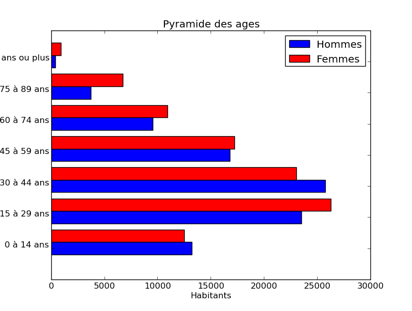

Session TP
Les fichier créés durant le TP. topExercice 1 - Pyramide des âges
Le fichier ages-2013.txt contient le recensement de la population des régions de la France métropolitaine en 2013 (selon l'INSEE).
Homme 0 à 19 ans,Homme 20 à 39 ans,Homme 40 à 59 ans,Homme 60 à 74 ans,Homme 75 ans et plus,Femme 0 à 19 ans,Femme 20 à 39 ans,Femme 40 à 59 ans,Femme 60 à 74 ans,Femme 75 ans et plus
Alsace,228114,232452,262694,130053,56677,217353,236656,264906,136065,96050
Aquitaine,379188,375522,442336,258219,134564,362797,380724,463419,287831,218792
Auvergne,149863,151217,186737,112709,56890,144904,147238,187984,121273,96815
- La première ligne contient les catégories (sexe et classe d'âge), séparés de virgules.
- Chaque ligne suivante contient le nom de la région suivi du nombre de personne recensé pour chaque catégorie dans cette région. Toutes ces informations sont séparés d'une virgule.
Écrire un script Python chargeant le fichier dans deux array à deux dimensions (un par sexe) associant aux catégorie d'âge et aux régions le nombre d'habitants correspondants.
-
Modifier le script pour qu'il calcule la population totale d'une région par catégorie d'âge. Faire ce calcul pour toutes les régions.
-
Modifier le script pour qu'il trouve la région le plus jeune, le plus agé, le plus masculin et le plus féminin (en moyenne sur la population de la région).
-
Modifier le script pour qu'il calcule le coefficient de corrélation des âges correspondant à deux régions quelconques puis qu'il affiche les régions où les âges de la population sont les plus corrélés.
import scipy as sp def lecture(): rangees = open("ages-2013.txt").readlines() # La premiere ligne contient les categories categories = [] categories = sp.array(rangees[0].split(",")[1:]) liste_homme = [] liste_femme = [] regions = [] # La derniere ligne est vide donc on ne la lit pas. for rangee in rangees[1:-1]: entrees_rangee = rangee.split(",") regions += [entrees_rangee[0]] for i in range(1, len(entrees_rangee)): entrees_rangee[i] = int(entrees_rangee[i]) liste_homme += [entrees_rangee[1:6]] liste_femme += [entrees_rangee[6:]] array_homme = sp.array(liste_homme) array_femme = sp.array(liste_femme) array_regions = sp.array(regions) return (categories, array_regions, array_homme, array_femme) def total_par_region(homme, femme): total = homme + femme return total.sum(axis = 1) categories, regions, homme, femme = lecture() totaux_region = total_par_region(homme, femme) # Conversion en valeur flottante pour permettre la division (une autre possibilite de d'utiliser float() plutot que int() durant la lecture du fichier) totaux_region = totaux_region.astype(float) pourcentage_femme = femme.sum(axis=1) / totaux_region indice_max_femme = (pourcentage_femme == pourcentage_femme.max()) print "La region la plus feminine est %s" % regions[indice_max_femme][0] pourcentage_homme = homme.sum(axis=1) / totaux_region indice_max_homme = (pourcentage_homme == pourcentage_homme.max()) print "La region la plus masculine est %s" % regions[indice_max_homme][0] # Nous allons prendre une estimation sur l'age moyen selon les donnes que nous avons. # Etant donne qu'il y a seulement des categories d'age, nous allons estimer que l'age moyen des gens d'une categorie est l'age moyen de cette categorie. # Tableau de l'age moyen par categorie categorie_age = [] for categorie in categories[:4]: min_cat, max_cat = int(categorie.split()[1]), int(categorie.split()[3]) categorie_age += [float(max_cat + min_cat) / 2] # Que veut dire le 75 et +? Estimons avec la valeur 90 categorie_age += [90.0] # Resultat attendu: # categorie_age = array([9.5, 29.5, 49.5, 67.0, 90.0]) age_moyen_par_region = sp.dot(homme+femme, categorie_age) print "La region la plus peuplee est %s" % regions[age_moyen_par_region == age_moyen_par_region.max()][0] print "La region la moins peuplee est %s" % regions[age_moyen_par_region == age_moyen_par_region.min()][0] correlation = sp.corrcoef(homme + femme) # Soustraire la matrice identite permet de supprimer les correlations a 1 # d'une ligne a elle meme correlation = correlation - sp.identity(correlation.shape[0]) print "Les regions ou les pyramides des ages sont les plus proches sont "\ + " et ".join(regions[sp.where(correlation == correlation.max())[0]])
-
Modifier le script pour ajouter une fonction qui affiche sous forme d'une pyramide des âges, le recensement cumulé d'une liste de noms de régions. (La fonction devrait prendre en entrée cette liste de nom de régions.)
Exemple de sortie (la vôtre peut être très différente):
import pylab as pl # Supposons que le premier fichier est appelle 'population.py' import population categories, regions, homme, femme = population.lecture() # Obtenir les categories d'age sans sexe ages = [] for categorie in categories[:5]: ages += [categorie.split("Homme ")[1]] def dessiner_pyramide(regions_demandes): indices_demandes = [] for nom in regions_demandes: #Pas tres joli parce qu'on sort un element d'un array avec [0][0] et on le remet dans une liste. indices_demandes += [pl.where(regions == nom)[0][0]] pl.title("Pyramide des ages") total_homme = homme[indices_demandes].sum(axis=0) total_femme = femme[indices_demandes].sum(axis=0) graphe_homme = pl.barh(pl.arange(len(ages))+0.1, total_homme, height=0.4, label="Hommes", color='b') graphe_femme = pl.barh(pl.arange(len(ages))+0.5, total_femme, height=0.4, label="Femmes", color='r') pl.ylabel("Ages") pl.yticks(pl.arange(len(ages)) + 0.5, ages) pl.xlabel("Habitants") pl.legend((graphe_homme[0], graphe_femme[0]), ('Hommes','Femmes')) pl.show() regions_demandes = raw_input("Entrez une liste de regions separe de virgules : ") dessiner_pyramide(regions_demandes.split(","))
Exercice 2 - Ensemble de Mandelbrot
D'après Wikipédia
L'ensemble de Mandelbrot est une fractale qui est définie comme l'ensemble des points c du plan complexe pour lesquels la suite récurrente définie par : zn+1 = zn2 + c et la condition z0 = 0 ne tend pas vers l'infini (en module). Si nous reformulons cela sans utiliser les nombres complexes, en remplaçant zn par le couple (xn, yn) et c par le couple (a, b) alors nous obtenons: xn+1 = xn2 - yn2 + a et yn+1 = 2xnyn + b.
Il peut être démontré que dès que le module de zn est strictement plus grand que 2 (zn étant sous forme algébrique, quand xn2 + yn2 > 2), la suite diverge vers l'infini, et donc c est en dehors de l'ensemble de Mandelbrot. Cela nous permet d'arrêter le calcul pour les points ayant un module strictement supérieur à 2 et qui sont donc en dehors de l'ensemble de Mandelbrot. Pour les points de l'ensemble de Mandelbrot, i.e. les nombres complexes c pour lesquels zn ne tend pas vers l'infini, le calcul n'arrivera jamais à terme, donc il doit être arrêté après un certain nombre d'itérations déterminé par le programme.
Écrire un script qui affiche (une approximation de) l'ensemble de Mandelbrot.
import pylab as pl
taille_grille = 501
# Points dans l'espace a tester.
a = pl.linspace(-2,2,taille_grille)
b = pl.linspace(-2,2,taille_grille)[:, pl.newaxis]
# Matrices ou toutes les rangees sont les memes
Mb = b + pl.zeros(taille_grille)
# Matrices ou toutes les colonnes sont les memes
Ma = a + pl.zeros(taille_grille)[:, pl.newaxis]
# Trouver si chacun des points converge
limite = 20
# z_0 = 0 partout
x = pl.zeros(Ma.shape)
y = pl.zeros(Ma.shape)
# Pas necessaire, mais gardons le nombre d'iteration que chaque point a diverge
temps_de_divergence = pl.zeros(Ma.shape)
# Trouve la suite z_n
for i in range(limite):
(x, y) = (x*x - y*y + a, 2*x*y + b)
# Tronquer les entrees deja divergente
x[x**2 + y**2 > 4] = 4
y[x**2 + y**2 > 4] = 4
temps_de_divergence[x**2 + y**2 > 4] += 1
z = x**2 + y**2
pl.imshow(z)
# C'est aussi possible de regarder les temps de divergence
pl.imshow(temps_de_divergence)